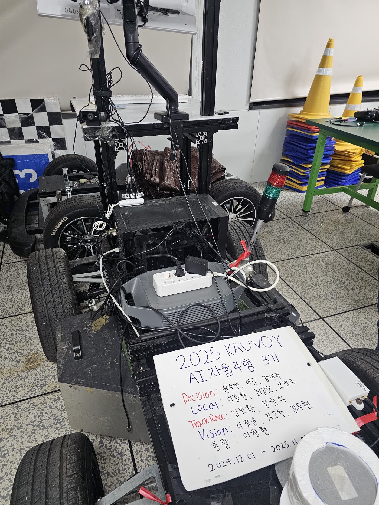
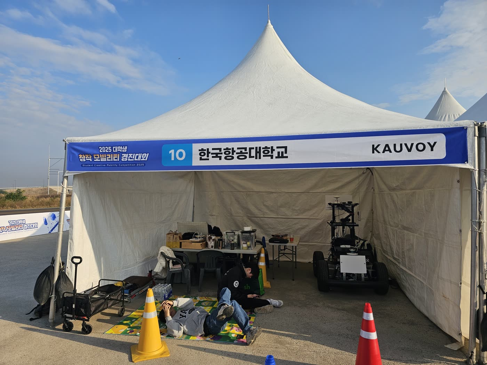
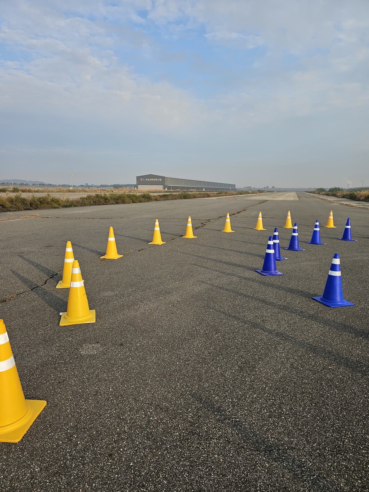
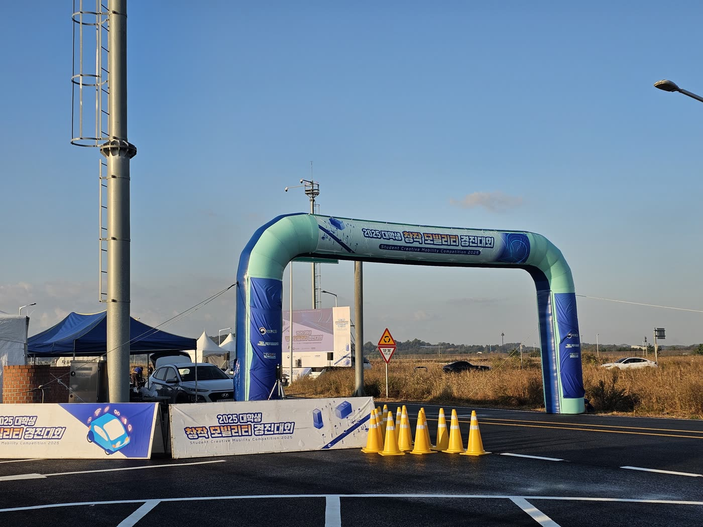

ERP42 실차 플랫폼에서 GPS·IMU·휠 엔코더를 융합하는 측위 시스템을 2년에 걸쳐 개발. 1년차의 시행착오를 바탕으로 2년차에 팀장으로서 아키텍처를 재설계하여 본선 진출을 달성했습니다.




이 경험은 2026 MORAI 시뮬레이션 프로젝트로 이어져, 측위를 넘어 MPC 기반 주행 스택 전체를 설계하는 단계로 확장되었습니다. 2025년의 Dual EKF 구조는 2026 스택의 측위 계층(robot_localization 이중 EKF)에 그대로 계승되었습니다.